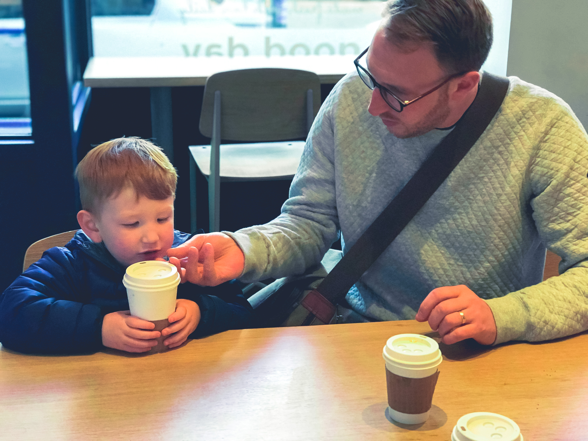

It took untill i was 35 to fully understand the Wu Tang Clan. The countless hours spent listening to 36 Chambers did not prepare me for the cold truth, "protect Ya Neck" was about wearing a scarf.
I grew up in the "cold". Dunedin, New Zealand isn't the tropics but i had no idea what cold was. In the past month it has hit -16 degrees celcius twice. Ice forms on the inside of the double glazed windows.
Luckily, Our apartment has central heating (unlike houses in NZ) and stays at a barmy 19 degrees all the time, even with the ice.
It was easy to formulate a picture in my head of what New York, and in particular The Bronx, would be like from 20+ years of listening to East coast Hip Hop. Gangs, dirty cops, herion dealers and guns were the main images i conjured before my arrival. I couldn't have been more wrong.
KRS-ONEs "sound of da police" has taken on a whole new meaning to me after being in The Bronx for a month. You hear sirens all. the. time. I'm still not sure whether it's good or bad but so far i've never felt in danger at all and everyone seems friendly as.
New York overall just seems like every other big city you might visit apart from maybe being slightly more expensive for common things like Mcdonalds etc, although the public transport is cheap and good even if it's crowded.
12 month Recap
The past 12 monthes has been tough. My wife Alia left for NYC in June 2018 to begin her new job at the Einstein Instiute as a research fellow leaving me and our son Boston in Dunedin while i completed my Bachelor degree in Information Technology.
It was a great relief when i completed my degree and jumped on a plane to meet my wife again after six monthes of being a solo dad. I have a new found respect for solo parents.
Unfortunatley for us, Donald Trump has shut down the government untill he gets "wall money" so the work visa i've applied for may take another 3-6 monthes to come through. Boredom is easy to fall into so i'm going to find some volunteer work untill the visa is approved.
So far New york feels like home because i have my wife and son here and that's all that matters at the moment, although working would be realllly good.
In the meantime i'll tinker with this website and enjoy hanging out with Alia and Boston.
Header Photograph by Dorain Mongel.